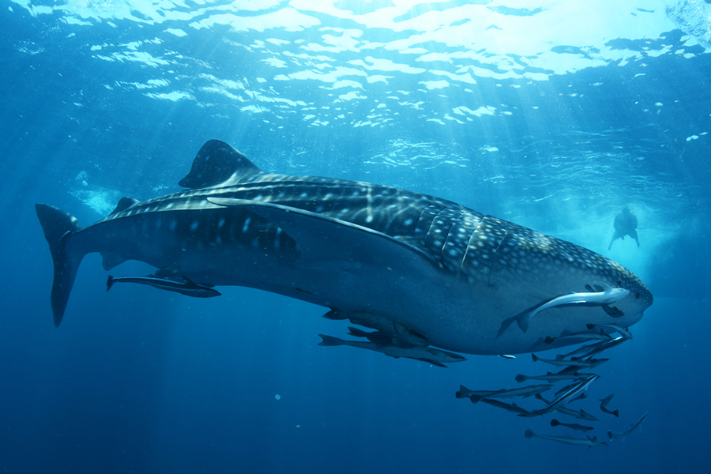

15/08/2023
Ayuda a cuidar y proteger la belleza, la importancia y la majestuosidad de la vida en el océano, este es un valioso recurso natural
"El mar es un espejo que refleja el cielo"
- William Shakespeare

"El mar es un espejo que refleja el cielo"
- William Shakespeare